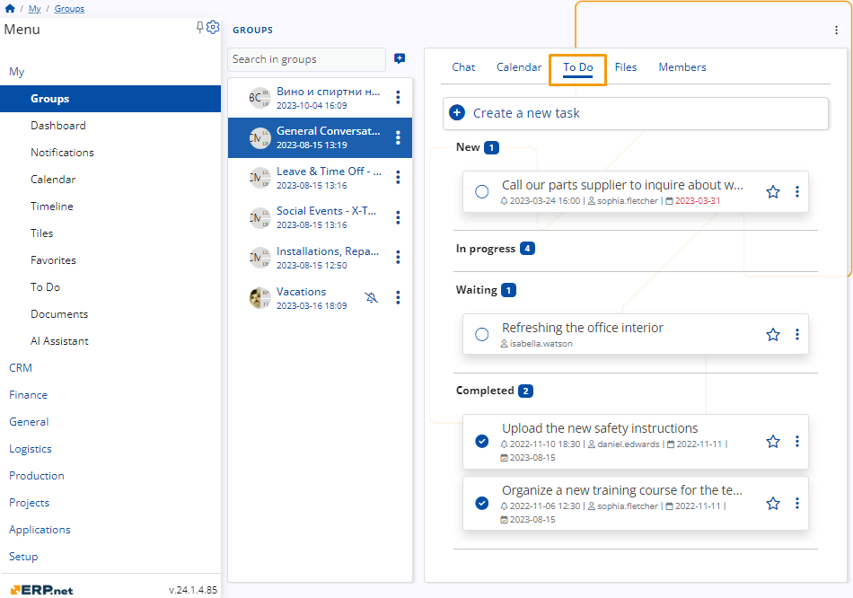
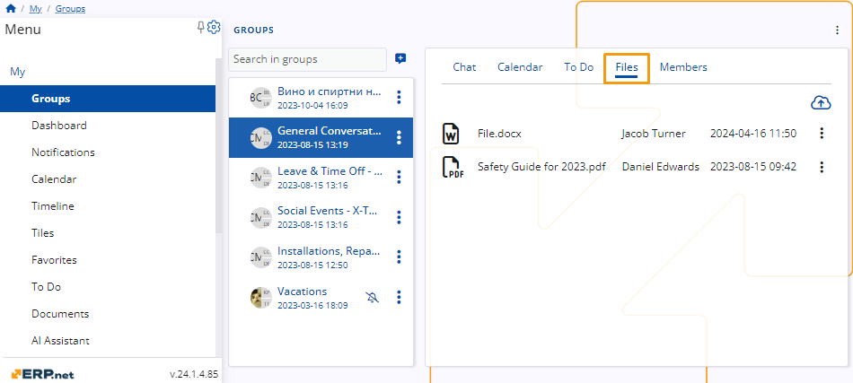
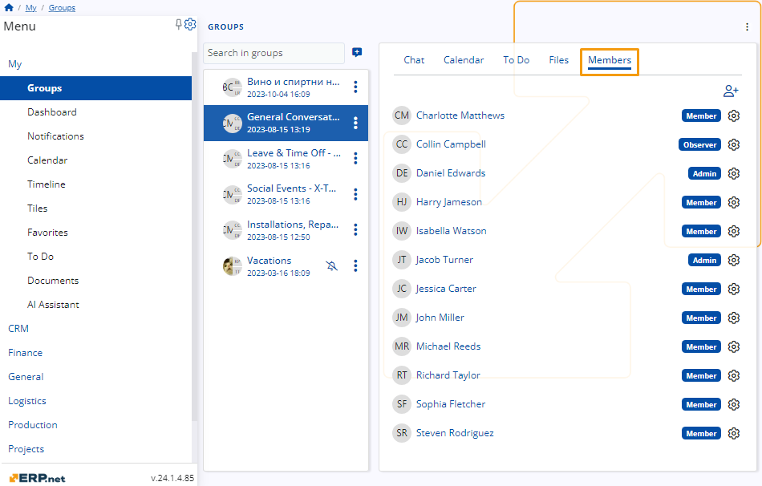

Social Groups
My Groups is a centralized all-in-one application uniting team collaboration with personal productivity.
It allows you to:
- easily communicate with your colleagues
- attend and schedule group meetings
- complete and assign tasks
- preview, download and upload file attachments
- manage group members
- ...and much more.

Structure
Every group consists of five tabs, each of which is tailored to the group and its participants.
Depending on the role of a member, access to these tabs may be limited.
Chat
The Chat enables swift communication between group participants.
For most members, it includes industry-standard features like the ability to preview and send messages, react and reply to others, and even edit one's own message.

Calendar
The Calendar allows members with the necessary permission levels to create and see various events and meetings that will be visible to the whole group.
If you create or are involved in a group activity as a participant, it will appear in your own personal Calendar as well.

To Do
The To Do tab displays all tasks assigned to you and other group members and lets you complete the ones that are ready.
As long as you have Member or Admin permissions, you can also create new tasks and delegate them to others.
If you add or are assigned a to-do, it will appear in your own personal To Do environment as well.

Files
In the Files tab, you can access file attachments uploaded by you or other group members.
You can see information about each file's format, the name of its author, as well as the date and time it was uploaded.

Members
The final Members tab houses all members of the current group, together with their roles.
Admins reserve the exclusive ability to create and remove participants, as well as change their permission levels on-demand.
